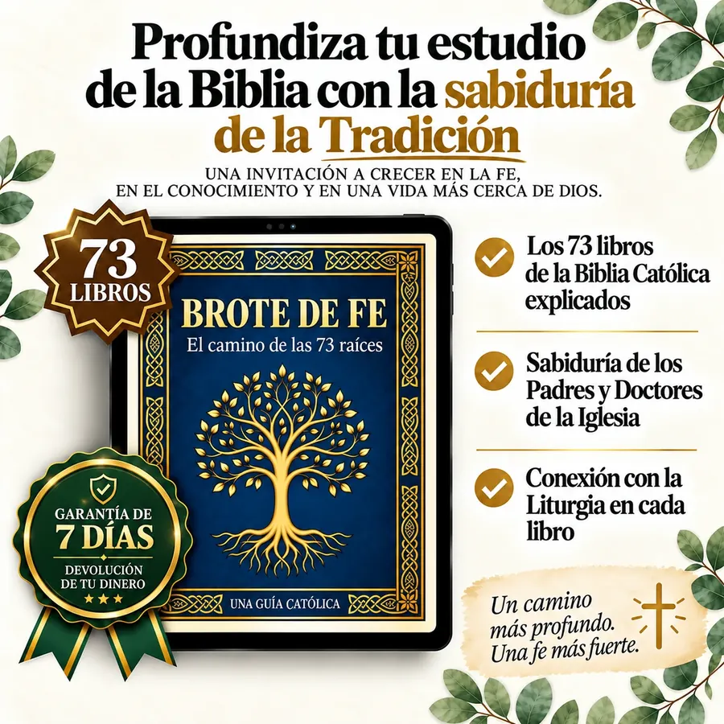
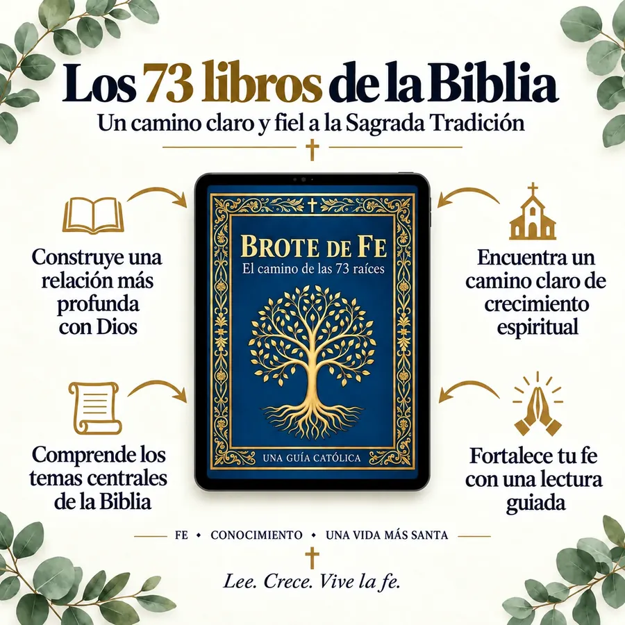
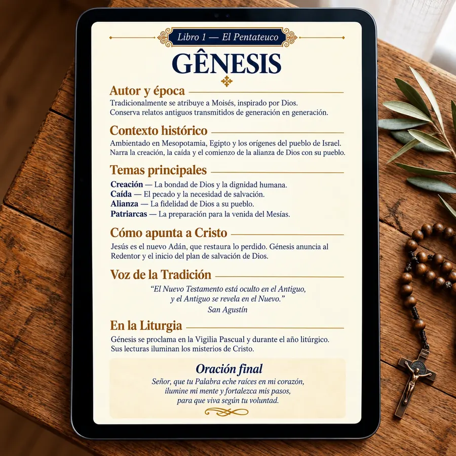

Comprende los 73 libros de la Biblia Católica
Una guía devocional clara, breve y fiel a la Tradición para que dejes de sentirte perdido y comiences a leer la Palabra con confianza, incluidos los 7 libros que conserva la Biblia Católica.
- Los 73 libros explicados en un lenguaje sencillo
- La voz de los Padres y Doctores de la Iglesia
- Cómo cada libro apunta a Cristo y a la Liturgia
- Una oración final para cada libro
Acceso inmediato · Garantía de 7 días

Quieres leer la Biblia… pero no sabes por dónde empezar
Abres el Antiguo Testamento y todo parece confuso, lejano y sin conexión con tu vida. Te dijeron que es «el libro más importante de tu vida», pero nadie te enseñó a leerlo.
«No es tu culpa. Nadie te dio un mapa: solo un libro de 1.500 páginas y la esperanza de que encontraras el camino por tu cuenta».
Brote de Fe es el mapa que nunca te dieron
Un ebook devocional con una raíz por libro: cada capítulo se lee en 5 a 10 minutos e incluye autor, contexto, temas centrales, la voz de la Tradición y una oración final.
Al terminar, conocerás los 73 libros de la Biblia Católica, incluidos los 7 deuterocanónicos que no aparecen en muchas ediciones modernas.

Cada libro, una raíz que florece

- Autor y épocaQuién lo escribió y cuándo, sin complicaciones académicas.
- Contexto históricoPor qué se escribió y para quién.
- Temas centralesLo esencial que necesitas saber.
- Cómo apunta a CristoLa clave católica para su lectura.
- La voz de la TradiciónCitas de los Padres y Doctores de la Iglesia.
- En la LiturgiaCuándo lo escuchas en la Misa.
- Oración finalPara terminar el día con la Palabra.
Antes y después de Brote de Fe
Antes
- Abres la Biblia y la cierras sin leer
- No distingues entre el Antiguo y el Nuevo Testamento
- Te pierdes entre los profetas y los libros sapienciales
- Sientes tu fe lejana, sin alimento diario
Después
- Sabes qué leer y por qué, cada día
- Conoces los 73 libros y su lugar en la historia de la salvación
- Lees con la mirada de la Iglesia y con confianza
- Tu oración diaria tiene raíces y da fruto
Brote de Fe está pensado para ti si…
- Eres católico (o quieres acercarte a la fe) y deseas conocer la Biblia completa.
- Estás cansado de explicaciones largas y académicas.
- Buscas un material breve para tu oración diaria.
- Quieres formar a tu familia en la fe de siempre.
- Eres catequista, padrino, madrina, líder de grupo o catecúmeno.
Todo lo que recibes al comprar Brote de Fe
Hoy pagas solo
US$9,90Pago único · acceso de por vida
7 días para leer con tranquilidad
Si durante los primeros 7 días el ebook no es lo que esperabas, solo tienes que contactar a Hotmart y recibirás el 100% de tu dinero de vuelta. Sin preguntas ni trámites complicados. Nosotros asumimos el riesgo.
Resolvemos tus dudas antes de comprar
¿Cómo recibo el ebook?
Después de confirmar el pago, recibirás un correo de Hotmart con el enlace para descargar el PDF. El acceso es inmediato y de por vida.
¿En qué dispositivos puedo leerlo?
En cualquier celular, tablet, computadora o lector de libros electrónicos compatible con PDF. También puedes imprimirlo en formato A5.
¿Es realmente católico?
Sí. Incluye los 73 libros, con los 7 deuterocanónicos, respeta el Magisterio, cita a los Padres y Doctores de la Iglesia y conecta cada libro con la Liturgia.
¿Y si no me gusta?
Tienes 7 días de garantía total. Solicita el reembolso a Hotmart y recibirás el 100% de tu dinero de vuelta, sin preguntas.
¿Necesito ser teólogo para entenderlo?
No. Está escrito en un lenguaje claro y reverente para que cualquier persona pueda comprenderlo dedicando unos minutos al día.
La Palabra que alimentó a los santos durante 2.000 años, ahora en tu celular
Por menos de lo que cuesta una pizza, lleva contigo los 73 libros de la Biblia Católica y la sabiduría de la Tradición.
US$9,90 · pago único · acceso de por vida
P. D.: Recuerda que tienes 7 días de garantía total. Si no es para ti, te devolvemos cada centavo. Lo único que puedes perder es la oportunidad de comprender por fin la Biblia.
Políticas
Política de privacidad
Tu privacidad es importante para nosotros. Esta política explica qué datos personales recopila Brote de Fe, cómo los utilizamos y cuáles son tus derechos, de conformidad con la Ley General de Protección de Datos de Brasil (LGPD, Ley n.º 13.709/2018).
1. Quiénes somos
Brote de Fe es un proyecto de contenido católico que comercializa materiales digitales, como el ebook «El camino de las 73 raíces». Puedes contactarnos en cualquier momento escribiendo a suporte@brotodefe.com.br.
2. Datos que recopilamos
Al realizar una compra o registrarte, podemos recopilar tu nombre, correo electrónico e información de la transacción (producto adquirido, importe y fecha). Los datos de pago, como el número de tarjeta y los datos bancarios, son tratados exclusivamente por la plataforma de pagos Hotmart; nosotros no tenemos acceso a ellos.
También recopilamos automáticamente datos de navegación, como páginas visitadas, origen del acceso e interacciones con el sitio, mediante cookies y herramientas de análisis.
3. Cómo utilizamos tus datos
Utilizamos los datos para procesar y entregar tu compra; enviar el material adquirido y las comunicaciones relacionadas con el pedido; ofrecer soporte; mejorar el contenido y la experiencia del sitio; y mostrar anuncios relevantes sobre nuestros materiales.
4. Cookies y herramientas de terceros
Utilizamos herramientas de análisis y marketing que pueden recopilar datos de navegación anónimos o seudónimos, entre ellas Meta Pixel (Facebook), Google Analytics y Google Ads, Taboola y UTMify (seguimiento del origen de las ventas). Estas herramientas pueden utilizar cookies para personalizar anuncios y medir los resultados de las campañas.
Para mostrar un equivalente aproximado del precio en tu moneda, el navegador consulta GeoJS para identificar el país a partir de la dirección IP y ExchangeRate-API para obtener los tipos de cambio. Al recibir estas conexiones, esos proveedores pueden tratar la dirección IP y los datos técnicos habituales de una solicitud web. No solicitamos acceso al GPS ni guardamos tu dirección IP en el almacenamiento del sitio. Conservamos temporalmente en tu navegador solo el código del país y las cotizaciones para reducir consultas repetidas.
Puedes desactivar las cookies y el almacenamiento local en la configuración de tu navegador o gestionar la personalización de anuncios desde tu cuenta de Google o Facebook.
5. Intercambio de datos
No vendemos ni cedemos tus datos personales a terceros para sus propios fines. Compartimos únicamente lo necesario con Hotmart, para procesar pagos y entregar el producto digital, y con los proveedores de análisis y marketing mencionados, siempre dentro de los límites de esta política y de la LGPD.
6. Seguridad y conservación
Adoptamos medidas técnicas y organizativas para proteger tus datos contra accesos no autorizados. Conservamos los datos únicamente durante el tiempo necesario para cumplir las finalidades descritas en esta política o las obligaciones legales.
7. Tus derechos
De acuerdo con la LGPD, puedes solicitar en cualquier momento la confirmación del tratamiento de tus datos; su acceso y corrección; la portabilidad; la anonimización, el bloqueo o la eliminación de datos innecesarios; y la revocación del consentimiento. Solo tienes que escribir a suporte@brotodefe.com.br.
8. Actualizaciones de esta política
Esta política puede actualizarse periódicamente. Los cambios relevantes se reflejarán en esta página con una nueva fecha de actualización.
Términos de uso
Al utilizar este sitio y adquirir nuestros materiales digitales, aceptas los términos que se indican a continuación. Si no estás de acuerdo con alguna condición, te pedimos que no realices la compra.
1. Sobre Brote de Fe
Brote de Fe es un proyecto de contenido católico dedicado a ayudar a los fieles a comprender la Biblia completa, sus 73 libros, de forma sencilla y accesible. Nuestro producto principal es el ebook «El camino de las 73 raíces».
2. Compra y entrega del producto
Las compras se procesan a través de Hotmart. Después de confirmar el pago, recibirás por correo electrónico el acceso al material digital y las instrucciones para descargarlo o acceder a él.
Los precios, condiciones y bonos son los que se muestran en la página de venta al momento de la compra y pueden modificarse sin previo aviso para compras futuras.
3. Uso permitido del material
El material adquirido es de uso personal e intransferible. Puedes leerlo, imprimirlo para uso propio y consultarlo cuantas veces quieras.
Está prohibido reproducir, distribuir, revender, compartir el archivo o publicar el contenido, total o parcialmente, en cualquier medio físico o digital.
4. Propiedad intelectual
Todo el contenido del sitio y de los materiales digitales, incluidos textos, diseño, nombre, marca e identidad visual, pertenece a Brote de Fe y está protegido por la legislación sobre derechos de autor. El uso no autorizado puede dar lugar a acciones judiciales.
5. Naturaleza del contenido
El contenido tiene carácter educativo, devocional y pastoral. No sustituye la orientación espiritual personal, el asesoramiento profesional ni el Magisterio de la Iglesia. Las citas bíblicas utilizan versiones de dominio público o debidamente indicadas.
6. Exención de responsabilidad
Nos esforzamos por mantener la información correcta y actualizada, pero no garantizamos que el sitio esté libre de errores o interrupciones temporales. No nos hacemos responsables de los perjuicios derivados del uso indebido del material o de decisiones tomadas con base en el contenido.
7. Modificaciones de los términos
Estos términos pueden actualizarse en cualquier momento. El uso continuado del sitio después de la publicación de nuevas condiciones implica su aceptación.
8. Contacto
Puedes enviar tus preguntas sobre estos términos a suporte@brotodefe.com.br.
Política de reembolso
Queremos que quedes satisfecho con tu compra. Si el material no es lo que esperabas, el reembolso es sencillo y sin trámites complicados.
1. Garantía de 7 días
Tienes 7 días naturales a partir de la fecha de compra para solicitar el reembolso íntegro sin necesidad de justificarlo. Este es el derecho de desistimiento previsto en el artículo 49 del Código de Defensa del Consumidor de Brasil y se respeta de forma incondicional.
2. Cómo solicitarlo
Envía un correo a suporte@brotodefe.com.br con el asunto «Reembolso» e indica el correo electrónico utilizado para la compra.
También puedes solicitarlo directamente en Hotmart, en la sección «Mis compras», dentro del plazo de garantía. Respondemos a las solicitudes en un plazo de hasta 24 horas, de lunes a viernes.
3. Plazo y forma de devolución
Una vez confirmada la solicitud, Hotmart procesa el reembolso. El plazo para que el importe aparezca en tu estado de cuenta o cuenta bancaria depende de la entidad emisora de la tarjeta o del medio de pago; generalmente es de 5 a 15 días hábiles.
4. Acceso al material después del reembolso
Con el reembolso, se desactiva el acceso al material digital adquirido. No hay reembolsos parciales: la compra se devuelve íntegramente dentro del plazo de garantía o se mantiene el acceso.
5. Compras fuera del plazo de garantía
Si ya pasaron los 7 días, te pedimos que te comuniques con nosotros de todas formas. Evaluamos cada caso con cuidado y atención, especialmente las compras duplicadas o los problemas técnicos de acceso.
6. Preguntas
Si tienes alguna pregunta sobre esta política, escribe a suporte@brotodefe.com.br.